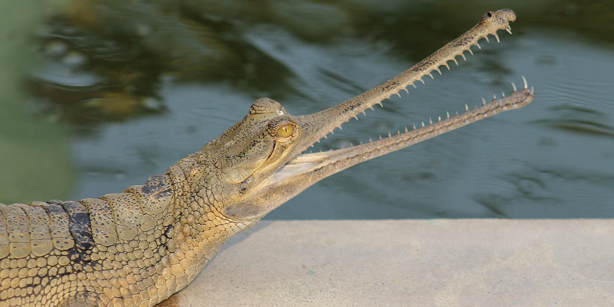

A web development project by [Your Name] for Mr. Fast's Class
Project Overview
Welcome to my digital species dossier collection. This project highlights four distinct species found at the Fresno Chaffee Zoo, categorized by their scientific class.
Please use the navigation menu to jump to the detailed fact sheets for each animal. Each report includes formal scientific classifications, physical profiles, geographical maps, and behavioral ecology.
Species Dossier: Sloth Bear (Mammal)
Basic Information
Common Name: Sloth Bear
Status/Conservation: Vulnerable
Full Scientific Classification
Taxonomic Rank
Classification
Kingdom
Animalia
Phylum
Chordata
Subphylum
Vertebrata
Class
Mammalia
Subclass
Theria
Order
Carnivora
Suborder
Caniformia
Family
Ursidae
Genus
Melursus
Species
M. ursinus
Physical Profile
Size Range
Body length of 5 to 6 feet; shoulder height around 2 to 3 feet.
Weight
120 to 310 lbs, with males being larger than females.
Identification Markings
Shaggy, dusty-black coat, a distinctive whitish or yellowish Y- or U-shaped mark on the chest, and long, curved claws.
Habitat & Geography
Sloth bears are native to the Indian subcontinent, thriving in dry and moist forests, savannahs, and scrublands.
Distribution Map
Ecology & Behavior
Feeding and Diet
Sloth bears are myrmecophagous, meaning they specialize in eating insects. Their diet includes:
Termites and ants
Honey and honeycombs
Various fruits and flowers
Life History Cycle
Gestation & Birth: Pregnancy lasts about 6 to 7 months, usually resulting in 1 to 2 cubs.
Cub Stage: Cubs ride on their mother's back for the first 9 months to stay safe from predators.
Independence: Cubs stay with their mother for 1.5 to 2.5 years before setting off on their own.
Communication & Adaptations
They have specially adapted lower lips that form a tube to vacuum up termites, creating a loud sucking noise that can be heard 100 meters away.
Media & Supporting Visuals
A Sloth Bear using its long claws to dig for insects.
Adult males reach 15 to 20 feet in length; females are slightly smaller.
Weight
350 to 550 lbs.
Identification Markings
Extremely long, thin snout filled with interlocking teeth. Adult males develop a bulbous cartilaginous growth on the tip of their snout called a "ghara." [8]
Habitat & Geography
Gharials are highly aquatic and prefer the calm areas of deep, fast-flowing rivers in Northern India and Nepal.
Gharials are specialized piscivores (fish-eaters). Their diet includes:
Small to medium-sized river fish
Occasional frogs and crustaceans (mostly eaten by juveniles)
Life History Cycle
Nesting: Females dig steep hole nests in river sandbanks and lay 20-90 eggs.
Hatching: After 70 days, hatchlings emerge. Unlike other crocodilians, mother gharials cannot carry babies in their mouths due to their needle-like teeth.
Maturity: Juveniles stay in creches protected by adults. Males grow their signature 'ghara' upon reaching sexual maturity at around 10 years old. [9]
Communication & Adaptations
The male's "ghara" acts as a vocal resonator to create buzzing and bubbling noises used during courtship and territory defense.
Media & Supporting Visuals

An adult male Gharial, identifiable by the 'ghara' on its snout. [18]


 [17]
[17]